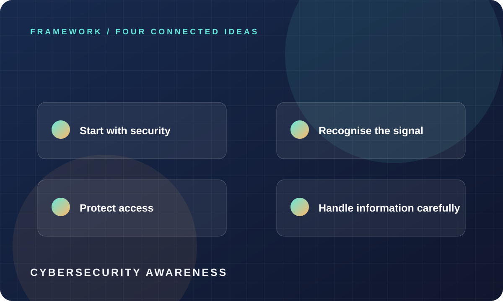
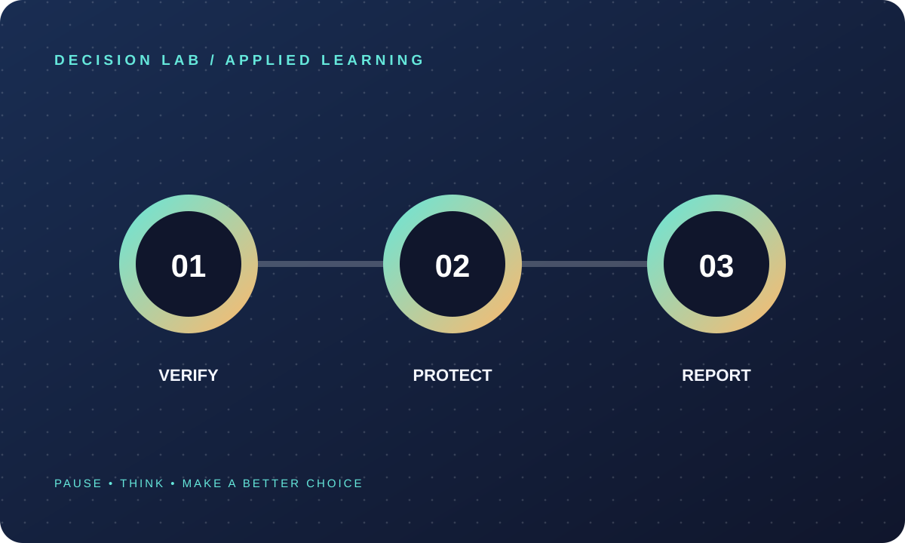

Recognise common phishing, impersonation and social-engineering warning signs.
SECURITY CULTURE / INTERACTIVE HTML COURSE
Cybersecurity Awareness
A practical, scenario-led course that turns everyday cyber risks into clear decisions employees can recognise, practise and act on.

VISUAL LEARNING EXPERIENCESHAY-ID / 01
SCROLL TO EXPLORE ↓
01 / COURSE OBJECTIVES
What you will be able to do.
By the end of this learning experience, you should be able to demonstrate these practical outcomes. Use them as a lens while you explore the chapters and make decisions.
Choose safer ways to verify unusual requests and protect account access.
Apply careful information-handling habits when storing, sharing and discussing work data.
Identify immediate response steps and the appropriate route for reporting a suspected incident.
Explain how everyday security habits reduce risk for colleagues and the organisation.

02 / YOUR LEARNING MAP
Six steps. One connected journey.
Each chapter builds on the previous one, moving from awareness to a more confident workplace response.
Spot suspicious signals
Security is a shared responsibility
Protect accounts and access
Read the message, not just the branding
Handle information carefully
Make account access harder to steal
Work securely across devices
Protect information throughout its lifecycle
Respond and report promptly
Secure the devices and spaces around you
Turn awareness into habit
Act quickly. Do not investigate alone.
03 / EXPLORE THE CONTENT
Learn it. Connect it. Apply it.
Read through each chapter, examine the visual cues and consider how the ideas translate into day-to-day work.
CHAPTER 01 / START WITH SECURITY
Security is a shared responsibility
Cybersecurity is not only an IT task. Every message opened, file shared, password entered and device used can affect organisational security. Many incidents begin with an ordinary-looking moment: a rushed request, a familiar logo or an unexpected attachment. The most useful first response is not technical expertise. It is a pause, a check and a clear reporting habit.
- Protect information, systems and people.
- Treat urgency, secrecy and unexpected changes as reasons to verify.
- Report suspicious activity early, even when you are unsure.
DESIGN TAKEAWAY
A pause before you act can prevent a small concern becoming a larger incident.
A pause before you act can prevent a small concern becoming a larger incident.
CONCEPT / 01
CHAPTER 02 / RECOGNISE THE SIGNAL
Read the message, not just the branding
Phishing attempts try to make a message feel routine or urgent. They may copy a familiar sender, mention a current project or ask for a quick sign-in. Look beyond the logo. Check the full sender address, the destination of links, unexpected attachments, unusual language and any request that bypasses normal process. A message can look polished and still be unsafe.
- Check the sender address and context, not only the display name.
- Treat unexpected links, attachments and sign-in prompts cautiously.
- Verify unusual payment, access or data requests through a separate trusted channel.
DESIGN TAKEAWAY
A familiar name is not proof that a message is genuine.
A familiar name is not proof that a message is genuine.
CONCEPT / 02
CHAPTER 03 / PROTECT ACCESS
Make account access harder to steal
Account security depends on layers. Use unique passwords or passphrases, store them only in an approved password manager and enable multi-factor authentication where available. Never share a one-time code, approve a sign-in prompt you did not initiate or reuse a work password on personal services. If an authentication prompt arrives unexpectedly, deny it and report it.
- Use unique credentials and the approved password manager.
- Never disclose a one-time code or approve an unexpected login request.
- Use multi-factor authentication and keep recovery methods current.
DESIGN TAKEAWAY
A one-time code is a key. Keep it to yourself, even when the request sounds convincing.
A one-time code is a key. Keep it to yourself, even when the request sounds convincing.
CONCEPT / 03
CHAPTER 04 / HANDLE INFORMATION CAREFULLY
Protect information throughout its lifecycle
Information protection starts with knowing what you are handling. Use approved storage and collaboration tools, check recipients before sending, share only what is needed and apply the organisation’s classification rules. Avoid moving work files to personal email or unapproved cloud services. Be mindful of screens, printouts and conversations in public places.
- Check classification, access permissions and recipients before sharing.
- Use approved storage, transfer and collaboration tools.
- Keep confidential information out of public spaces and personal accounts.
DESIGN TAKEAWAY
Convenience is not a substitute for an approved way to share information.
Convenience is not a substitute for an approved way to share information.
CONCEPT / 04
CHAPTER 05 / WORK SECURELY EVERY DAY
Secure the devices and spaces around you
A secure workday includes software updates, device locking, trusted networks and awareness of physical surroundings. Install updates through approved channels, lock your screen when stepping away and avoid unknown USB devices. When travelling or working remotely, protect your display and conversations from people nearby. If a device is lost, report it quickly.
- Keep devices updated and use approved security controls.
- Lock screens and protect devices when working away from a desk.
- Avoid unknown removable media and untrusted connections.
DESIGN TAKEAWAY
Good security is a set of small habits repeated consistently.
Good security is a set of small habits repeated consistently.
CONCEPT / 05
CHAPTER 06 / RESPOND AND REPORT
Act quickly. Do not investigate alone.
If you click a suspicious link, disclose a code, lose a device or notice an unusual account event, report it using your organisation’s approved security channel. Do not delete messages or try to conceal a mistake. Follow the instructions provided by the response team, preserve relevant details and change credentials only as directed. Speed and transparency help limit impact.
- Stop interacting with the suspicious content or request.
- Report what happened, when it happened and what information may be affected.
- Follow the security team’s instructions and preserve useful evidence.
DESIGN TAKEAWAY
Early reporting is a strength. It gives the organisation more options to respond.
Early reporting is a strength. It gives the organisation more options to respond.
CONCEPT / 06
04 / DECISION LAB
What would you do next?
Use the ideas from the course in a short workplace situation. Select the response you would take and review the feedback.

WORKPLACE MOMENT / APPLY YOUR JUDGEMENT
A supplier emails an urgent request to change bank details for an invoice. The message looks familiar, but the sender address is slightly different and asks you to keep the change confidential.
Choose the most appropriate response.
05 / KNOWLEDGE CHECK
Make the learning stick.
Answer five questions to check your understanding. Submit when you are ready to see your score and review the explanations.
YOUR NEXT STEP
Take the idea
into your work.
Choose one action from this course to apply in your next relevant task or conversation. Learning becomes valuable when it changes what we notice, decide or do.